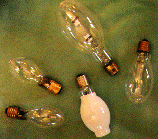

Used in Streetlights
There are several light sources which have been used in electric street lights. The main types used since the 1940s in the United States have been Incandescent, Fluorescent, Low Pressure Sodium and High Intensity Discharge.
Incandescent
Incandescent lamps are among the first and least efficient light sources used in street lighting. Incandescent lighting was a popular option for street lighting until the 1950s, when other lamps proved to be more efficient and lower maintenance.
Fluorescent
Fluorescent lamps gained popularity for street lighting applications in the 1950s. The lamps were more efficient than their Incandescent counterparts, and required less maintenace. The lamps were primarily used in downtown areas and parking lots. They were good for any place requiring a lot of light over a large area. The popularity of these lamps was relatively short-lived, as more efficient, compact and lower-maintenance High Intensity Discharge lamp technology was advanced.
Low Pressure Sodium
High Intensity Discharge
There are three main types of High Intensity Discharge (HID) lamps. HID
lamps in general requre an external ballast to operate. These lamps
usually take between 1 and 5 minutes to reach full brightness, and if
there is a dip in electricity, these lamps will shut off. The lamps must
cool sufficiently to restrike, which usually takes from 1 minute to 10
minutes. Street lights using these lamps have been labelled on the bottom
of the fixture since the late 1970s. A number on the bottom multiplied by
10 yields the wattage rating of the fixture (e.g. "10" means 100 watts,
"25" means 250 watts. The only exception is 1000 watt fixtures, which are
labelled as "X1".) Mercury Vapor has a blue label, Metal Halide has a red
label and both types of sodium lamps have yellow or gold
labels.
Mercury Vapor
 Mercury Vapor was the first widely accepted HID lighting source. Clear
mercury vapor lamps cast a blue-green light, which some say makes people
look like "walking cadavers." Advances in technology have lead to color
corrected mercury vapor lamps, which cast a relatively clean white light.
This is done by coating the outer glass globe of the lamp with
phosphors.
Mercury Vapor was the first widely accepted HID lighting source. Clear
mercury vapor lamps cast a blue-green light, which some say makes people
look like "walking cadavers." Advances in technology have lead to color
corrected mercury vapor lamps, which cast a relatively clean white light.
This is done by coating the outer glass globe of the lamp with
phosphors.
By the late 1950s, mercury lamps were very widely used around the US. The lamps were about as efficient as fluorescents, the fixtures were smaller, and lasted much longer. The lamps could also operate in extreme cold. One main difficulty with mercury lamps was "lumen depreciation." Lumen depreciation is a drop in light output of the lamp over time. In a lot of cases, a mercury lamp will burn for years past it's rated life, but it will burn much dimmer while using the same amount of wattage.
Metal Halide
 Metal Halide Lamps are a distant cousin of mercury lights. The basic lamp
is the same as a mercury lamp, but with other metallic elements added.
The result is a good quality white light. Metal hallide has not gained
wide acceptance as a source of street light. It is mostly found in
parking lots and inside commercial and industrial buildings. The light is
more efficient than mercury vapor, but the lamp life is shorter. Another
problem incurred with metal hallide is "color shift." The color of the
light produced by each lamp varies slightly, which leads to a cluttered
effect. There are now lamps on the market that keep color shift to a
minimum, helping to alleviate that problem. Of course, since the Metal
Halide lamps are related to mercury, they too suffer from lumen
depreciation, but not as extreme as MV.
Metal Halide Lamps are a distant cousin of mercury lights. The basic lamp
is the same as a mercury lamp, but with other metallic elements added.
The result is a good quality white light. Metal hallide has not gained
wide acceptance as a source of street light. It is mostly found in
parking lots and inside commercial and industrial buildings. The light is
more efficient than mercury vapor, but the lamp life is shorter. Another
problem incurred with metal hallide is "color shift." The color of the
light produced by each lamp varies slightly, which leads to a cluttered
effect. There are now lamps on the market that keep color shift to a
minimum, helping to alleviate that problem. Of course, since the Metal
Halide lamps are related to mercury, they too suffer from lumen
depreciation, but not as extreme as MV.High Pressure Sodium
 High Pressure Sodium (HPS) lamps are now commonly used around the US in
street lights. The lamps were developed in the early 1970s and are more
energy efficent than mercury and metal hallide lamps. The lamps give off
an amber color, have virtually no problem with color shift, and last for
long periods of time. The lamps begin to incur problems when they near
the end of their life. Lumen depreciation is a problem with HPS, though
still not as severe as the depreciation seen with Mercury. The lamps
begin to "cycle," which means they turn themselves off and come back on a
minute later. This problem has been addressed with the recent
introduction of non-cycling HPS lamps. Advances in photocontols can also
stop cycling: Lighting Systems
Technologies, Inc has information on these.
This page is in no way shape or form part of any corporation or government
agency. It is the creation of Jim Terry. Please,
feel free to link to this page!
High Pressure Sodium (HPS) lamps are now commonly used around the US in
street lights. The lamps were developed in the early 1970s and are more
energy efficent than mercury and metal hallide lamps. The lamps give off
an amber color, have virtually no problem with color shift, and last for
long periods of time. The lamps begin to incur problems when they near
the end of their life. Lumen depreciation is a problem with HPS, though
still not as severe as the depreciation seen with Mercury. The lamps
begin to "cycle," which means they turn themselves off and come back on a
minute later. This problem has been addressed with the recent
introduction of non-cycling HPS lamps. Advances in photocontols can also
stop cycling: Lighting Systems
Technologies, Inc has information on these.
This page is in no way shape or form part of any corporation or government
agency. It is the creation of Jim Terry. Please,
feel free to link to this page!